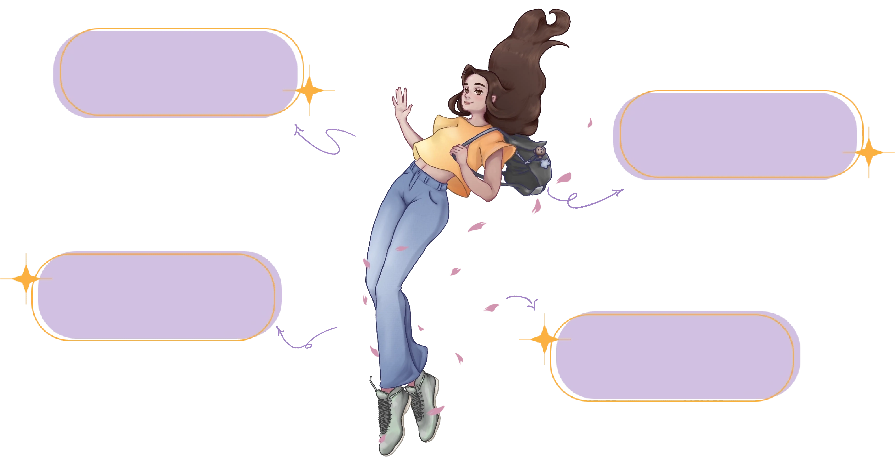
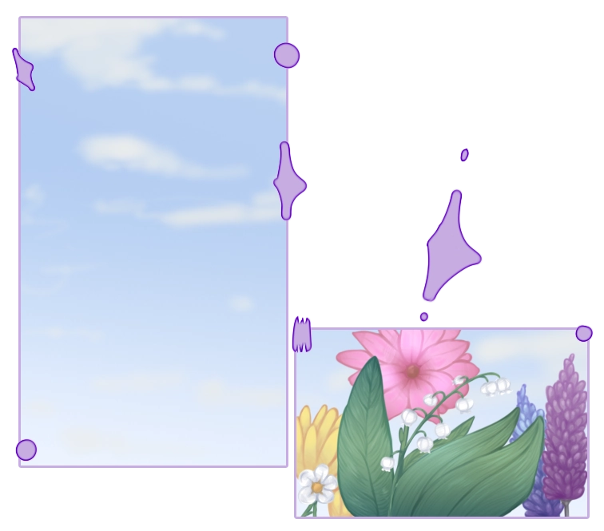
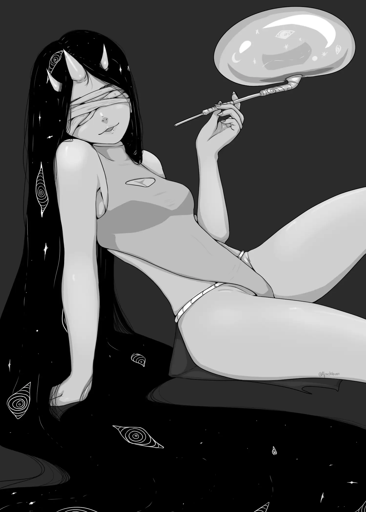
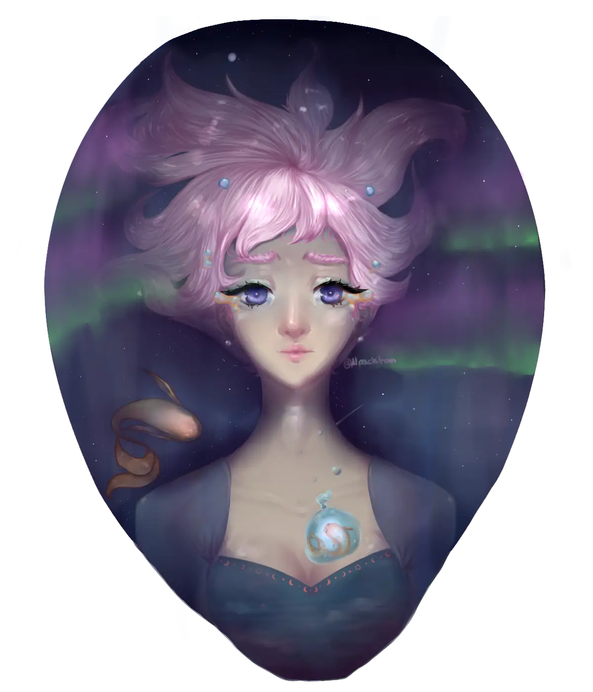
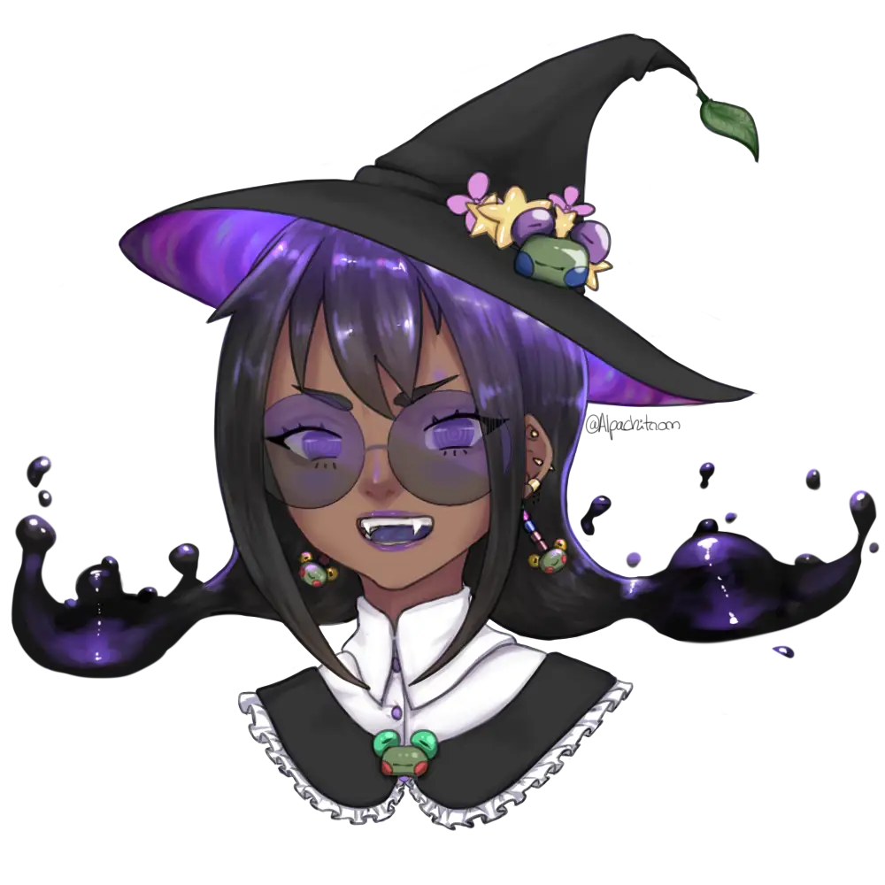
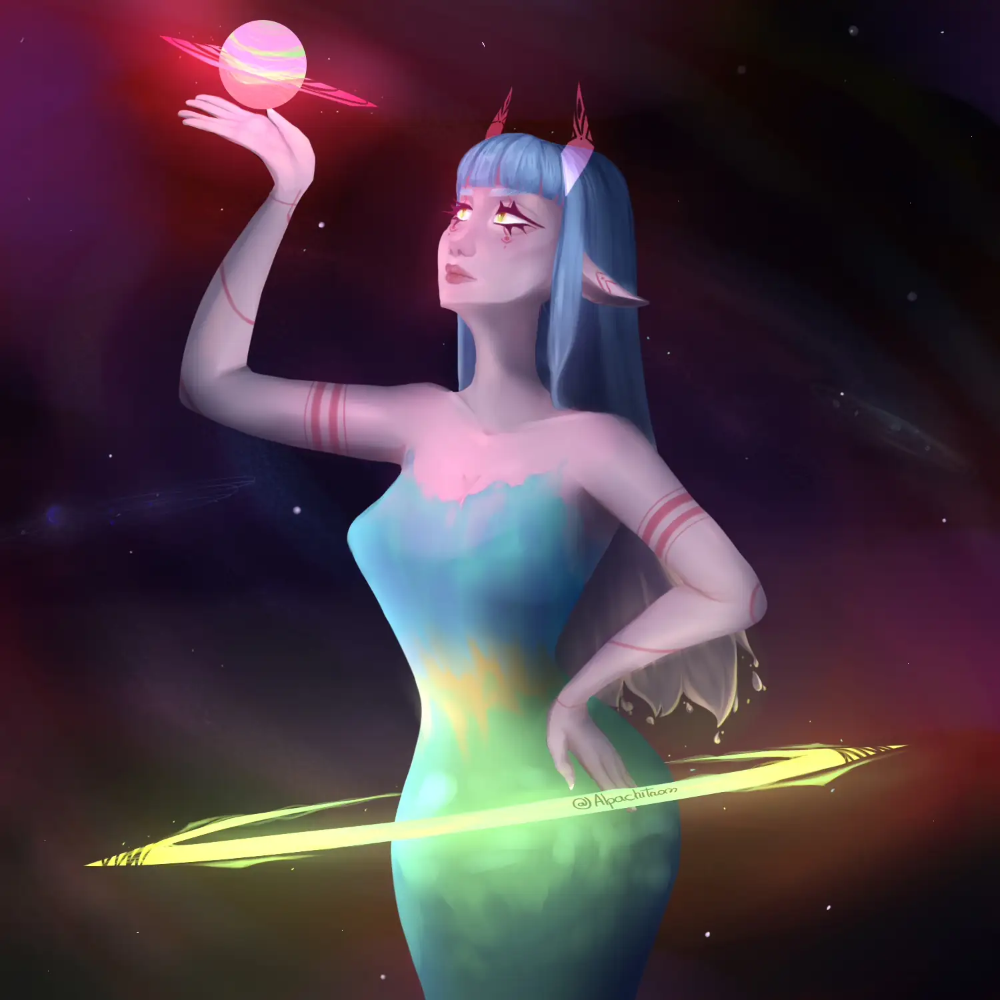
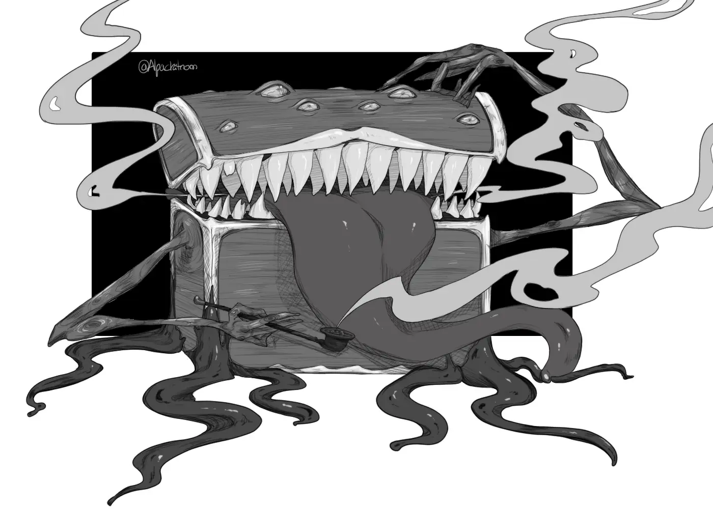
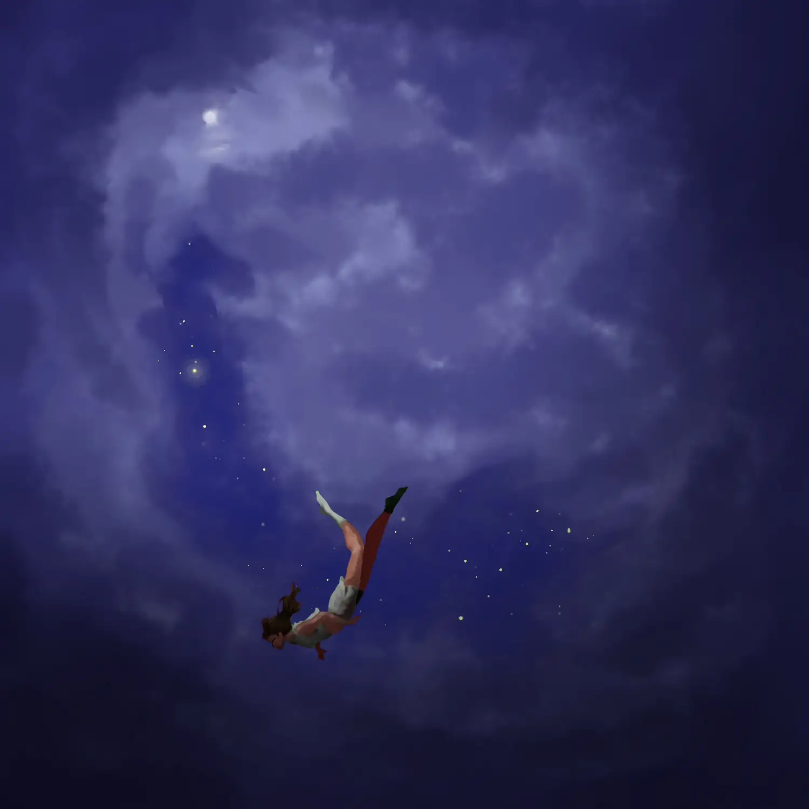
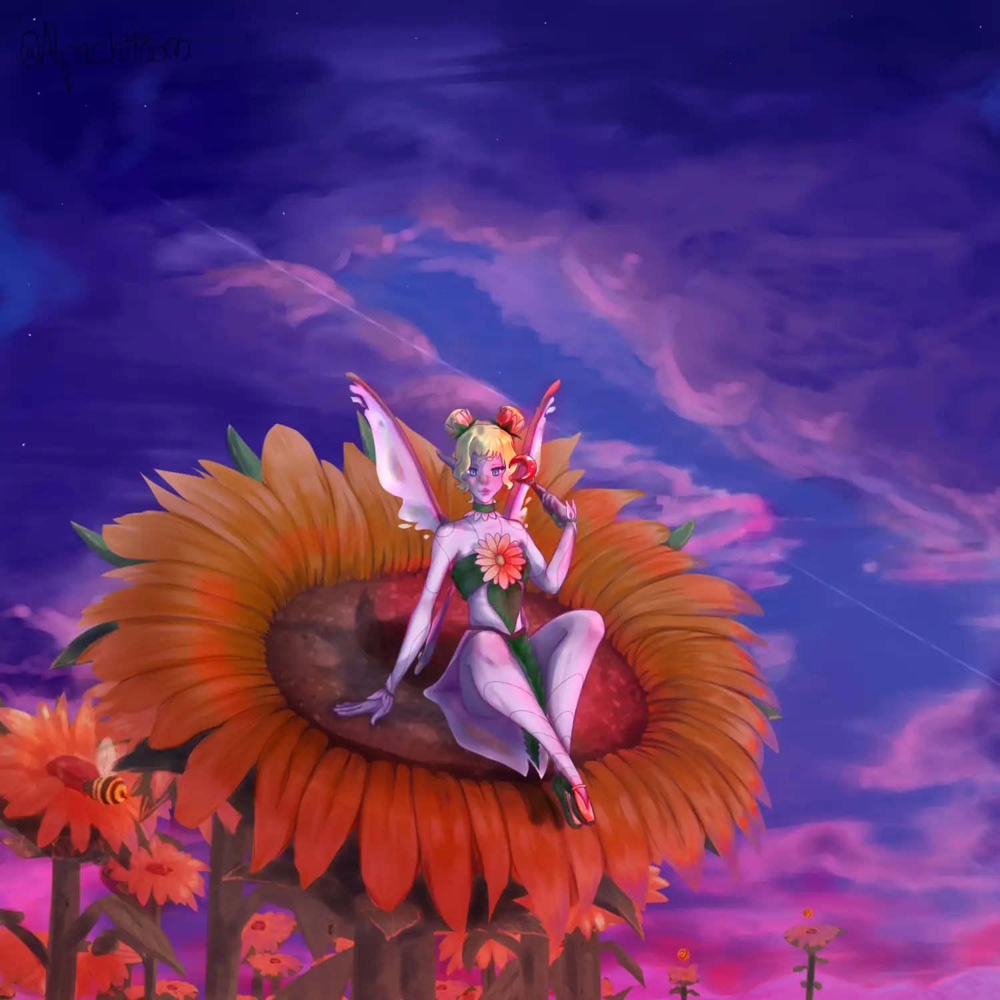
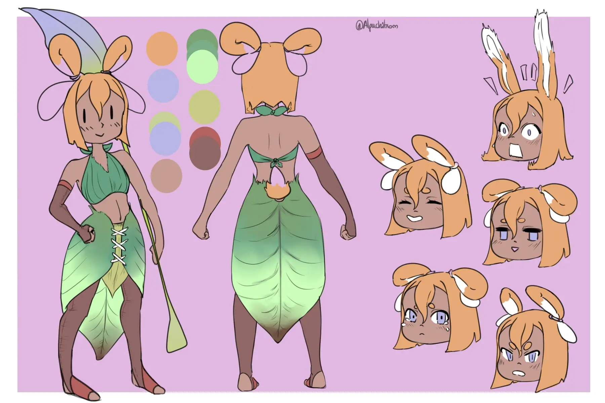

Hi, I’m Jéssica!
Here you’ll find illustrations
and creative projects.
Everything I make has a little bit of me in it.
Take a peek at what I’m creating!

Here are some of my projects.
I create digital illustrations in various themes, but my main focus is the feminine and character design.
I also have some UI/UX projects that are part of this portfolio.
I share my art on other social platforms too, all the links are on my Carrd.
Illustrations








×